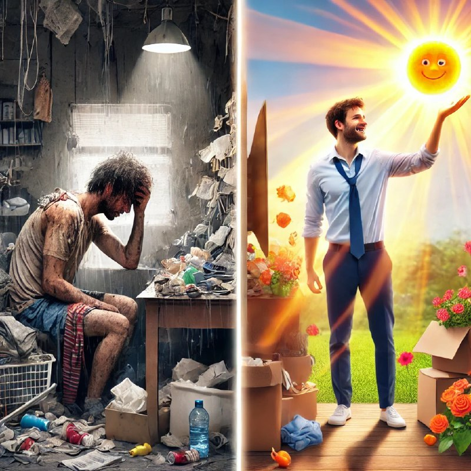

Тасаввур қилинг, бир аёл бор. У ҳаётининг ҳар кунини оиласи учун бахш этади. Эрталаб…

Тасаввур қилинг, бир аёл бор. У ҳаётининг ҳар кунини оиласи учун бахш этади. Эрталаб фарзандлар билан бирга барвақт туриб, нонушта тайёрлайди, кун бўйи чарчаб ишлайди, кечқурун эса куч-қувватсиз ҳолда тўшакка ётиб қолади. У ўз саломатлигига аҳамият бермайди, ҳеч қачон ўзи учун вақт ажратмайди. Бир куни эса унинг соғлиги ҳам, кучи ҳам қолмайди. Оиласига бошқача ёрдам беришга қодир эмаслигини ҳис этади.
Таниш ҳолатми?
Ўзингизга ғамхўрлик қилмасангиз, бошқалар ҳақида қайғуриш қийин бўлади.
Кўпчилик ўзингиз ҳақида ўйлашни худбинлик деб ўйлайди. Аммо бу нотўғри тушунча. Ўзингизга ғамхўрлик қилиш — бу нафақат керакли, балки зарур нарса. Биз бошқаларнинг қувончи ва қувват оладиган манбасимиз. Агар бу манба қуруқ бўлса, биздан нимани олиш мумкин?
Бошқа мисол
Ҳар сафар самолётда учганингизда стюардессанинг: “Биринчи ўзингизга кислород ниқобини тақинг, кейин болангизга ёрдам беринг” деган гапни эшитгансиз. Бу жуда катта ҳаётий ҳикматни англатади. Агар ўзингизни асрай олмасангиз, бошқага қандай ёрдам берасиз? Ҳақиқий ёрдам ва ғамхўрлик кучли инсондан келади.
Бошқа иқтибос
Бир олим устознинг ҳаётига диққат қилинг. У ҳар доим ёрқин, ҳикматли маслаҳатлар берадиган одам эди. Унинг шогирдлари устозининг қандай қилиб барчага эътиборли ва сабрли эканини сўрашди. Устоз уларга шундай деди:
“Ҳар куни эрталаб ўз боғимга ғамхўрлик қиламан. Гулларни суғораман, печакларни йўқ қиламан, табиатнинг гўзаллиги билан баҳраманд бўламан. Менинг боғим яхши ҳолатда бўлса, бошқаларга ёрдам беришга куч-қувватим бўлади.”
Бир куни устоз безовталаниб, унинг боғига вақт ажратмаслигига сабаб бўлди. Ўша куни устоз асабий ва чарчаган ҳолда эди. Шогирд тушундики, агар инсонга ўзига ғамхўрлик қилишга вақт берилмаса, у бошқаларга ёрдам бера олмайди.
Ўзингизга ғамхўрлик қилиш йўллари
1. Саломатлик: Тўғри овқатланинг, спорт билан шуғулланинг, яхшилаб дам олинг.
2. Руҳий ҳолат: Хушнудлик келтирадиган ишларга вақт ажратинг — сайр қилинг, хоббилар билан шуғулланинг, ором олинг.
3. Ўсиш: Янги билимларга эга бўлинг, орзу қилинг, китоб ўқинг.
4. Чегараларни белгилаш: “Йўқ” деб айтганни ҳам ўрганинг. Бу сизга кераксиз чарчоқдан сақланишга ёрдам беради.
Ўзингизга ғамхўрлик қилишга вақт ажратганингиз учун ўйланманг. Чунки бу нафақат ўзингиз учун, балки атрофингиздагилар учун ҳам фойда келтиради. Соғлом, қувноқ ва кучли инсонгина ҳақиқий ёрдам кўрсата олади.
Бугундан бошланг: ўзингиз учун кичик бўлсада бир иш қилинг. Қувват олинг, шунда эртанги кунингиз ёрқин бўлади ва сиз бошқаларга ёрдам бериш учун янада кучли бўласиз. Ахир, сиз яқинларингиз учун ёруғлик манбаи бўлишга арзисиз!
Ўзингизни ўйламасангиз, бошқалар ҳақида қайғуролмайсиз!